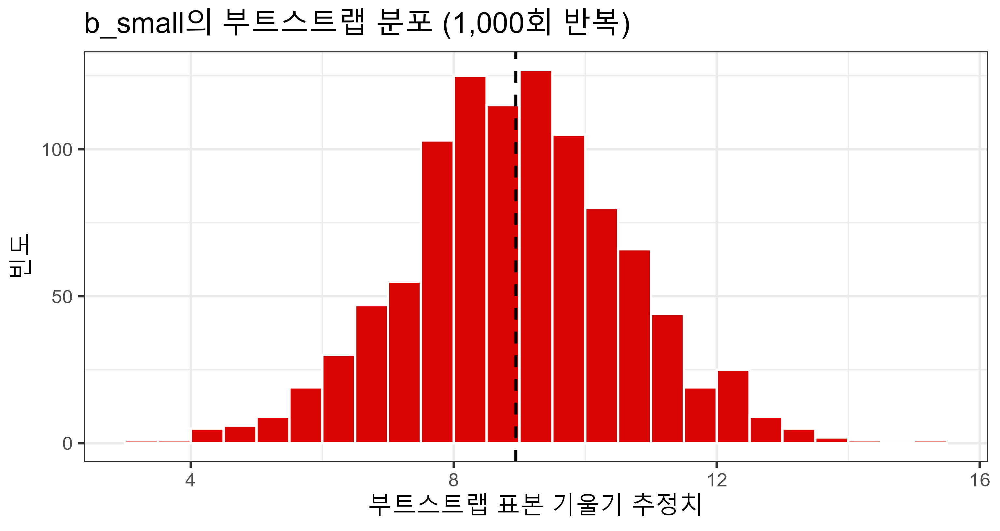
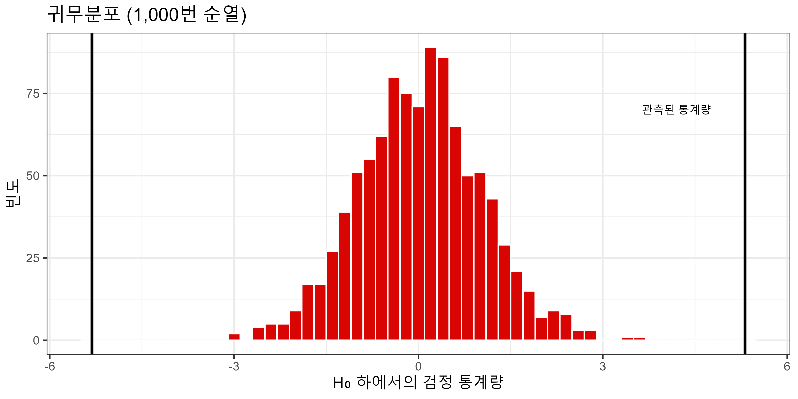
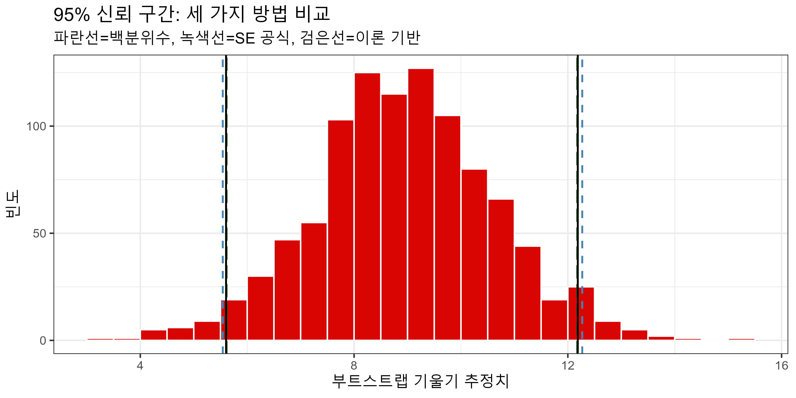
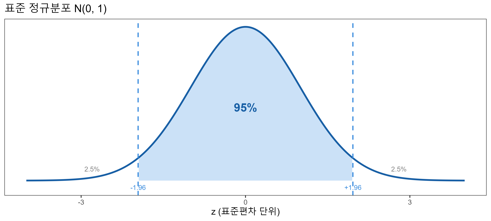
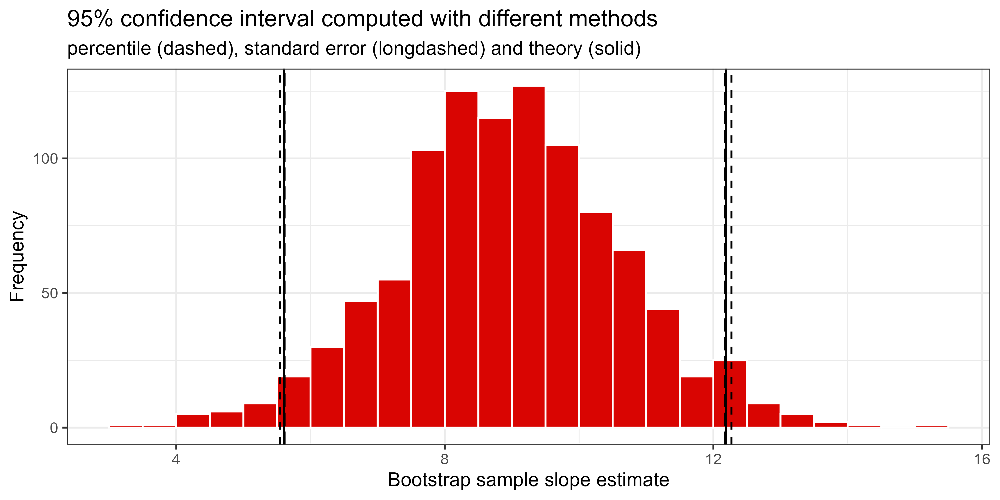
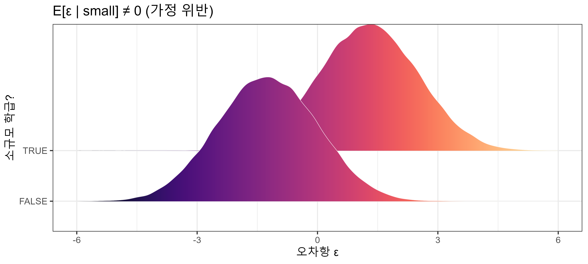
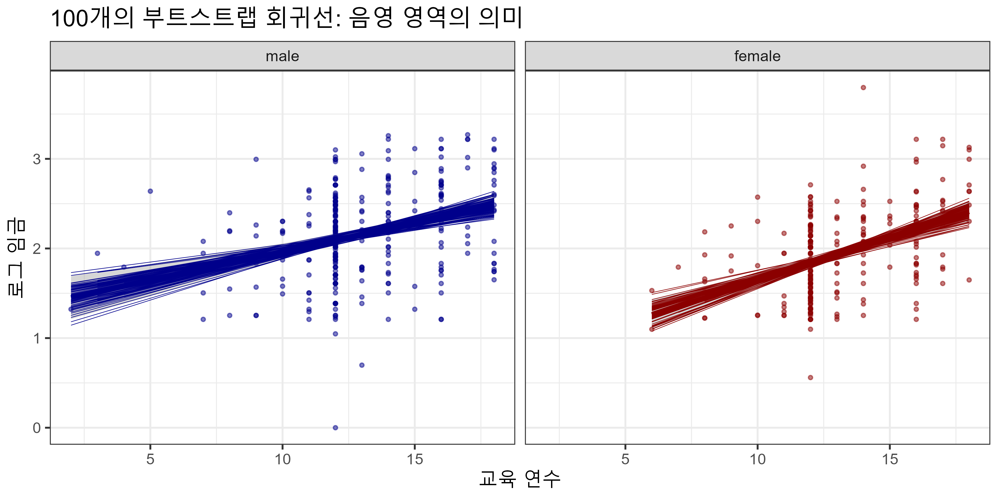
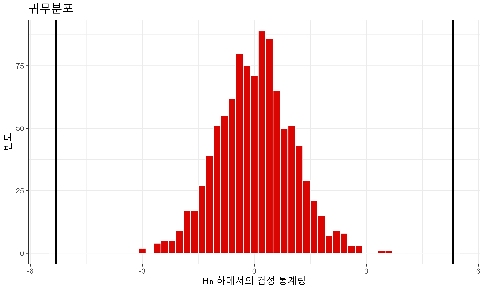

Regression Inference
FMB819: R을 이용한 데이터분석
Today’s Agenda
Part 1 — 회귀 테이블 읽기
- 회귀 계수의 표준 오차·검정 통계량·p-값 해석
- 이론 기반 vs. 시뮬레이션 기반 추론 비교
- 신뢰 구간 구성 방법
Part 2 — 고전적 회귀 모형 (CRM) 가정
- 외생성·i.i.d.·등분산성·정규성
- 누락 변수 편향 (OVB): 언제 추정값을 믿을 수 없는가?
회귀 계수 하나를 어떻게 읽고, 언제 믿을 수 있는가?
학급 크기와 학생 성취도
STAR 실험 데이터: 소규모 학급(small) vs. 일반 학급(regular), 유치원(K) 학년
회귀 모형:
\[\text{math score}_i = \beta_0 + \beta_1 \cdot \text{small}_i + \varepsilon_i\]
다른 무작위 표본을 선택해 같은 실험을 반복하면, \(b_1\)이 달라질까?
- Yes. 이 추정값이 얼마나 달라질 수 있는지가 곧 표준 오차임.
회귀 추론: \(b_k\) vs \(\beta_k\)
우리가 표본에서 계산한 것
\[\hat{y} = b_0 + b_1 x\]
- \(b_0, b_1\) = 점 추정치 (표본마다 달라짐)
- 파스타 예제의 \(\hat{p}\)와 동일한 논리
우리가 알고 싶은 진짜 값
\[y = \beta_0 + \beta_1 x + \varepsilon\]
- \(\beta_0, \beta_1\) = 모집단 모수 (하나의 고정된 값)
- 관찰 불가능 → 추정으로 접근
이제 신뢰구간, 가설검정, 표준오차 개념을 회귀 계수에 그대로 적용함.
| 파스타 예제 | 회귀 분석 |
|---|---|
| 표본 비율 \(\hat{p}\) | 회귀 계수 \(b_k\) |
| 모집단 비율 \(p\) | 모집단 계수 \(\beta_k\) |
| \(SE(\hat{p})\) | \(SE(b_k)\) |
회귀 테이블 이해하기
# A tibble: 2 × 5
term estimate std.error statistic p.value
<chr> <dbl> <dbl> <dbl> <dbl>
1 (Intercept) 484. 1.15 421. 0
2 smallTRUE 8.90 1.68 5.30 0.000000123새로운 세 열의 의미:
| 열 이름 | 의미 | 해석 |
|---|---|---|
std.error |
\(b_k\) 의 표준 오차 | 이 추정값이 얼마나 불안정한가? |
statistic |
검정 통계량 \(b_k / \hat{SE}(b_k)\) | \(H_0: \beta_k = 0\) 대비 얼마나 극단적인가? |
p.value |
\(H_0: \beta_k = 0\) 에 대한 p-값 | 이 차이가 우연일 확률 |
→ small 계수를 중심으로 각 항목을 순서대로 이해해보자.
\(b_k\)의 표준 오차 (Standard Error)
표준 오차: \(b_k\)의 표본 분포의 표준 편차. “실험을 반복하면 \(b_k\)가 얼마나 달라지는가?”를 수치화한 것.
회귀 테이블의 값: \(\hat{SE}(b_\text{small}) = 1.68\)
- \(\hat{SE}\)인 이유: 표본 하나에서 추정된 값이므로. 진짜 \(SE\)는 알 수 없음.
부트스트랩으로 직접 확인해보자
부트스트랩 SE: 1.674 ← 테이블 값 1.68와 매우 유사!
Task 1
녹색 파스타 비율의 샘플링 분포를 생성했던 것처럼, \(b_\text{small}\)의 부트스트랩 분포를 생성하시오.
- 데이터 로딩 슬라이드의 코드를 실행하여
star_df준비.
- 아래 코드로 부트스트랩 분포 생성:
- 시뮬레이션된 분포를 시각화하고, \(b_\text{small}\)의 평균과 표준 오차를 계산하시오.
- 표준 오차가 회귀 테이블의
std.error값과 얼마나 가까운가?
부트스트랩 분포

- 분포의 중심: 8.94 ← 원래 표본 \(b_\text{small}\)과 유사
- 분포의 표준 편차 = 표준 오차: 1.674 ← 테이블 값 1.68와 거의 일치
\(\beta_\text{small} = 0\) 인지 검정하기
기본적으로 회귀 분석 출력은 다음 가설 검정 결과를 제공함:
\[H_0: \beta_k = 0 \quad \text{(변수가 결과에 영향 없음)}\] \[H_A: \beta_k \neq 0 \quad \text{(변수가 결과에 영향 있음)}\]
검정 통계량: 단순히 \(b_k\)가 아니라 \(\dfrac{b_k}{\hat{SE}(b_k)}\) 를 사용하는 이유
- \(b_k\)의 크기만으로는 “큰” 값인지 판단 불가 → \(SE\)로 나눠 표준화
- 관측된 검정 통계량: 5.3
귀무분포와 p-값

- p-값 ≈ 0: 어떤 유의수준 (\(\alpha\) = 0.1, 0.05, 0.01) 에서도 \(H_0\) 기각
- 즉, \(b_\text{small}\)은 통계적으로 유의하며, 소규모 학급이 수학 성취도에 실제 영향을 미침.
Regression Inference: Theory
이론 기반 추론: 핵심 아이디어
시뮬레이션 기반은 직관적이지만, R이 실제로 사용하는 방법은 이론 기반.
이론적 근거 (CLT 적용):
\[\frac{b_k - \beta_k}{\hat{SE}(b_k)} \xrightarrow{n \to \infty} N(0, 1)\]
즉, 표본 크기가 충분하면 표준화된 회귀 계수는 표준 정규 분포로 수렴.
→ 표본 분포를 시뮬레이션할 필요 없이, 이론적으로 알려진 정규 분포를 사용.
| 시뮬레이션 기반 | 이론 기반 | |
|---|---|---|
| 직관 | 높음 | 보통 |
| 계산 속도 | 느림 | 빠름 |
| 가정 필요 | 적음 | 정규성·등분산 등 |
R 기본값 |
아니오 | 예 |
이론 기반 추론: 신뢰 구간
\(b_k\)의 표본 분포가 정규 분포를 따르므로, 95% 근사 규칙 적용:
\[\text{CI}_{95\%} = \left[b_k \pm 1.96 \times \hat{SE}(b_k)\right]\]
세 가지 방법 비교:
# A tibble: 1 × 3
term conf.low conf.high
<chr> <dbl> <dbl>
1 smallTRUE 5.60 12.2
세 방법 모두 거의 유사한 구간을 산출함 → 이론·시뮬레이션이 수렴.
95% 신뢰 구간 공식: 1.96은 어디서 왔는가?
3단계 논리 흐름
① CLT 적용
표본이 충분히 크면, \(\hat{b}\)은 정규 분포를 따름:
\[b \approx N\!\left(\beta,\; SE^2\right)\]
② 표준화 (z-변환)
\[z = \frac{b - \beta}{SE} \approx N(0,\, 1)\]
③ 1.96의 출처
표준 정규분포의 성질:
\[P(-1.96 \leq z \leq +1.96) = 0.95\]
이를 \(\beta\)에 대해 풀면:
\[\therefore\quad b \pm 1.96 \times SE\]

신뢰수준별 z-값
| 신뢰수준 | z-값 | 구간 폭 |
|---|---|---|
| 90% | ±1.645 | 좁음 — 덜 보수적 |
| 95% | ±1.96 | 통상 사용 기준 |
| 99% | ±2.576 | 넓음 — 더 보수적 |
Task 2
- Task 1에서 생성한 부트스트랩 분포를 사용하여 백분위수 방법으로 95% 신뢰 구간을 계산하시오.
# A tibble: 1 × 2
lower upper
<dbl> <dbl>
1 5.54 12.3- 이전 슬라이드의 이론 기반 신뢰 구간과 얼마나 유사한가?
# A tibble: 1 × 2
lower upper
<dbl> <dbl>
1 5.61 12.2# A tibble: 1 × 3
term conf.low conf.high
<chr> <dbl> <dbl>
1 smallTRUE 5.60 12.2bootstrap_distrib %>%
ggplot(aes(x = stat)) +
geom_histogram(boundary = 9, binwidth = 0.5, col = "white", fill = "#d90502") +
labs(
x = "Bootstrap sample slope estimate",
y = "Frequency",
title = "95% confidence interval computed with different methods",
subtitle = "percentile (dashed), standard error (longdashed) and theory (solid)"
) +
geom_vline(xintercept = c(ci_pctile$lower, ci_pctile$upper), linetype = "dashed", show.legend = TRUE) +
geom_vline(xintercept = c(ci_stderror$lower, ci_stderror$upper), linetype = "longdash", show.legend = TRUE) +
geom_vline(xintercept = c(ci_theory$conf.low, ci_theory$conf.high)) +
theme_bw(base_size = 14)
- 신뢰수준을 99%로 바꾸면 구간이 어떻게 달라지는가? 왜 그런가?
회귀 분석 표 정리
reg1 <- lm(math ~ small, data = star_df)
reg2 <- lm(math ~ small + gender, data = star_df)
reg3 <- lm(read ~ small, data = star_df)
reg4 <- lm(read ~ small + gender, data = star_df)
export_summs(
reg1, reg2, reg3, reg4,
model.names = c("Math (1)", "Math (2)", "Reading (1)", "Reading (2)"),
coefs = c(
"Intercept" = "(Intercept)",
"Small class" = "smallTRUE",
"Male gender" = "gendermale"
)
)| Math (1) | Math (2) | Reading (1) | Reading (2) | |
|---|---|---|---|---|
| Intercept | 484.45 *** | 488.85 *** | 435.76 *** | 439.62 *** |
| (1.15) | (1.43) | (0.75) | (0.93) | |
| Small class | 8.90 *** | 8.94 *** | 5.37 *** | 5.41 *** |
| (1.68) | (1.67) | (1.09) | (1.09) | |
| Male gender | -8.56 *** | -7.49 *** | ||
| (1.67) | (1.09) | |||
| N | 3359 | 3359 | 3359 | 3359 |
| R2 | 0.01 | 0.02 | 0.01 | 0.02 |
| *** p < 0.001; ** p < 0.01; * p < 0.05. | ||||
회귀 분석 표 읽는 법
표의 구조 한 눈에 보기
| 위치 | 내용 | 의미 |
|---|---|---|
| 각 열 상단 | 모형 이름 | 종속변수·모형 구분 |
| 계수 행 | \(\hat{\beta}_k\) | 독립변수 1단위 증가 시 종속변수 변화량 |
| 괄호 안 | \(\hat{SE}(b_k)\) | 추정의 불확실성 |
| \(*, **,***\) | 유의수준 | \(*: 10\%, **: 5\%,*** : 1\%\) |
| \(N\) | 관측치 수 | 표본 크기 |
| \(R^2\) | 결정계수 | 모형의 설명력 (0~1) |
주요 해석 원칙
- \(|\text{statistic}| > 2\) → 5% 유의수준에서 유의 (왜? \(1.96 \approx 2\))
- 별(*) 개수가 많을수록 우연일 확률이 낮음
- \(R^2\)는 높다고 좋은 모형이 아님 — 변수 해석이 더 중요
Classical Regression Model
고전적 회귀 모형 (CRM): 왜 중요한가?
- 회귀 계수와 p-값은 가정이 충족될 때만 믿을 수 있음.
- 실무에서 회귀 결과를 의사결정에 활용하려면, 이 가정들을 점검해야 함.
4가지 핵심 가정 요약
| 가정 | 한 줄 설명 | 위반 시 결과 |
|---|---|---|
| ① 외생성 | 오차항이 설명변수와 무관 | 계수 편의 → 방향도 틀릴 수 있음 |
| ② i.i.d. | 표본이 무작위, 관측치가 독립 | 계수 편의, 표본 대표성 상실 |
| ③ 등분산성 | 오차 분산이 일정 | SE 편향 → p-값·CI 신뢰 불가 |
| ④ 정규성 | 오차가 정규 분포 | 소표본에서 추론 부정확 |
가장 심각한 위반: ① 외생성. 계수 자체가 틀려짐 — SE를 아무리 잘 추정해도 소용없음.
가정 ①: 외생성 (Exogeneity)
\[E[\varepsilon \mid x] = 0\]
오차항이 설명변수와 상관이 없어야 함 (Cov(ε, x) = 0).
가정 충족 (STAR 실험)

가정 위반 (관찰 연구)

STAR가 무작위 배정 실험인 이유: 소규모 배정이 관찰되지 않은 요인(능력, 가정 환경)과 무관하도록 설계 → 외생성 보장.
누락 변수 편향 (Omitted Variable Bias)
사례: 교육이 임금에 미치는 영향
\[\text{wage}_i = \beta_0 + \beta_1 \cdot \text{education}_i + \varepsilon_i\]
- 문제: 관찰되지 않는 능력 \(a_i\) 가 존재.
- 능력 높음 → 임금 높음 ✓
- 능력 높음 → 교육 많이 받음 ✓
- \(a_i\)는 \(\varepsilon_i\)에 포함 → \(Cov(\varepsilon, \text{education}) \neq 0\) → 외생성 위반
OVB 공식:
\[\mathbb{E}(b_1) = \underbrace{\beta_1}_{\text{진짜 효과}} + \underbrace{\beta_\text{ability} \times \frac{Cov(\text{education}, \text{ability})}{Var(\text{education})}}_{\text{편향 (OVB)}}\]
- 능력이 임금에 양(+) 영향, 교육과 양(+) 상관 → OVB > 0 → \(b_1\) 과대추정
단순 회귀로 “교육 1년 = 임금 X% 증가”라고 말할 때, 실제로는 능력 효과가 혼재되어 있음. 이를 해결하려면 능력을 통제하거나, 자연 실험·도구 변수를 활용해야 함.
CRM 가정 ②③④ 요약
② i.i.d. (독립적이고 동일하게 분포)
- 표본이 모집단에서 무작위로 추출되고, 각 관측치가 서로 독립적이어야 함.
- 위반 사례: 같은 회사 내 직원들을 표본으로 사용 → 관측치 간 상관 (군집 표준오차 필요)
③ 등분산성 (Homoskedasticity)
- 오차 분산이 \(x\) 값에 무관하게 일정해야 함: \(Var(\varepsilon \mid x) = \sigma^2\)
- 위반 시: 계수는 여전히 불편이지만, SE 추정 편향 → p-값·CI 신뢰 불가
- 해결책: 이분산성 강건 표준오차 (heteroskedasticity-robust SE) 사용
④ 정규성 (Normally Distributed Errors)
- \(\varepsilon \sim \mathcal{N}(0, \sigma^2)\)
- 엄격히 필수는 아님 — 대표본 CLT 덕분에 자연히 해소
- 소표본(n < 30)에서만 중요
우선순위: ① 외생성 >> ③ 등분산성 > ② i.i.d. >> ④ 정규성
Task 3-1
교육과 성별이 임금에 미치는 효과 분석.
AER패키지의CPS1985데이터 로드 및 변수 확인:?CPS1985
log_wage를gender와education에 회귀 분석 →reg1저장.
- 각 계수를 해석하시오. 5% 유의수준에서 통계적으로 유의한가?
gender * education상호작용 항 추가 →reg2저장.
genderfemale:education계수를 해석하시오.- 5% 유의수준에서 귀무가설을 기각할 수 있는가? 10%에서는?
Task 3-2
- 로그 임금과 교육 수준 간의 관계를 나타내는 산점도에 회귀선 추가:
음영 영역(회색 띠)이 무엇을 의미하는지 설명하시오.
부트스트랩 표본 1개를 추출해 회귀선이 어떻게 달라지는지 확인:
set.seed(123)
cps_boot <- CPS1985[sample(nrow(CPS1985), replace = TRUE), ]
reg_boot <- lm(log_wage ~ gender * education, data = cps_boot)
# 남성·여성 각각의 절편과 기울기 추출
intercept_m <- coef(reg_boot)["(Intercept)"]
slope_m <- coef(reg_boot)["education"]
intercept_f <- intercept_m + coef(reg_boot)["genderfemale"]
slope_f <- slope_m + coef(reg_boot)["education:genderfemale"]
# 원래 플롯에 두 회귀선 추가
ggplot(CPS1985, aes(x = education, y = log_wage)) +
geom_point(alpha = 0.3) +
geom_smooth(method = "lm") +
geom_abline(intercept = intercept_m, slope = slope_m, color = "blue") +
geom_abline(intercept = intercept_f, slope = slope_f, color = "red")불확실성 시각화: 100개의 부트스트랩 회귀선

- 얇은 선 각각 = 하나의 부트스트랩 표본에서 얻은 회귀선
- 음영 영역 = 이 선들의 95%가 포함되는 범위 = 95% 신뢰 구간
핵심 정리
| 개념 | 정의 | 해석 |
|---|---|---|
| 표준 오차 | \(b_k\) 표본 분포의 SD | 추정의 불확실성 크기 |
| 검정 통계량 | \(b_k / \hat{SE}(b_k)\) | \(|t| > 2\) → 5% 유의 |
| p-값 | \(H_0\) 하에서 이만큼 극단적인 값이 나올 확률 | 작을수록 우연 가능성 낮음 |
| 95% CI | \(b_k \pm 1.96 \times \hat{SE}(b_k)\) | 0 포함 여부로 유의성 확인 |
| OVB | 누락 변수로 인한 계수 편향 | 관찰 연구에서 항상 의심 |
Bottom line: 별(***)이 많다고 좋은 분석이 아니다. 외생성 가정이 타당한지, OVB 가능성은 없는지 먼저 따져야 한다.
🔍 요약
✅ 데이터를 어떻게 다룰까?: 읽기(Read), 정리(Tidy), 시각화(Visualize)…
✅ 변수간 관계를 어떻게 요약할까? 단순 / 다중 선형 회귀…
✅ 전체 모집단을 관측하지 못하면 어떻게 할까? Sampling!
✅ 우리의 연구 결과가 단순한 무작위(Randomness) 때문일 수도 있을까? 신뢰구간과 가설검정. 통계적 추론
THE END!
Appendix: infer 파이프라인 전체 코드
# 부트스트랩 분포
bootstrap_distrib <- star_df %>%
mutate(small = as.numeric(small)) %>%
specify(formula = math ~ small) %>%
generate(reps = 1000, type = "bootstrap") %>%
calculate(stat = "slope")
# 귀무분포 (순열 검정)
null_distribution <- star_df %>%
mutate(small = as.numeric(small)) %>%
specify(formula = math ~ small) %>%
hypothesize(null = "independence") %>%
generate(reps = 1000, type = "permute") %>%
calculate(stat = "slope") %>%
mutate(test_stat = stat / sd(bootstrap_distrib$stat))
# p-값 계산
mean(abs(null_distribution$test_stat) >= observed_stat)